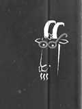

OĞLAK KLASİKLERİ
Dünya şiirinin başyapıtı İlahi Komedya, Dante’nin Cehennem’e, Âraf’a ve Cennet’e yaptığı düşsel bir geziyi destanlaştırır. İlahi Komedya, 14 233’e ulaşan toplam dize sayısı ile şiir tarihinin en uzun soluklu şiiridir. Dante’nin, 1300 yılının 7 Nisan Perşembe gecesi başlayan gezisi bir hafta sürer, Dante’ye Cehennem ve Âraf yolculuğu boyunca Latin şair Vergilius rehberlik eder. Araf’ın tepesinde Vergilius yerini, Cennet’te Dante’ye rehberlik edecek olan Beatrice’ye bırakır. Dante, Beatrice’yi ilk gördüğünde kendisi dokuz, Beatrice sekiz yaşındadır. Dante, ömrü boyunca Beatrice’ye bağlı kaldığı gibi, düşünce dünyasının da esin kaynağı olur Beatrice.
Vergilius’un Aeneis destanını örnek alan ve sıradışı bir aşka mitoloji, tarih ve kutsal metinlerle de desteklenen gerçeküstücü bir ortamda yakılan bir ağıt olarak da değerlendirilebilecek olan İlahi Komedya'nın tarih ve felsefeden dinbilime, gökbilimden geometriye uzanan bir ansiklopedi niteliği taşıması da bir başka özelliğidir.
Eksiksiz ve ilk kez şiir olarak Türkçeleştirilen İlahi Komedya da hak ettiği yerde... Oğlak Klasikleri’nde.
